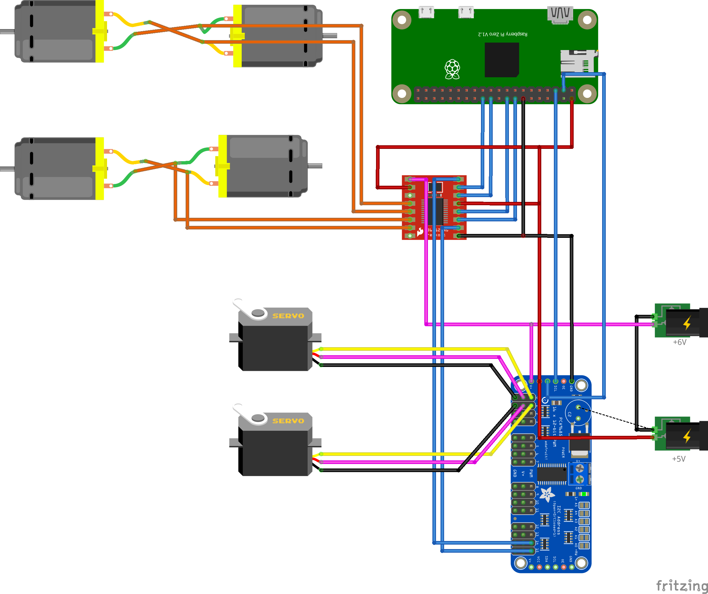
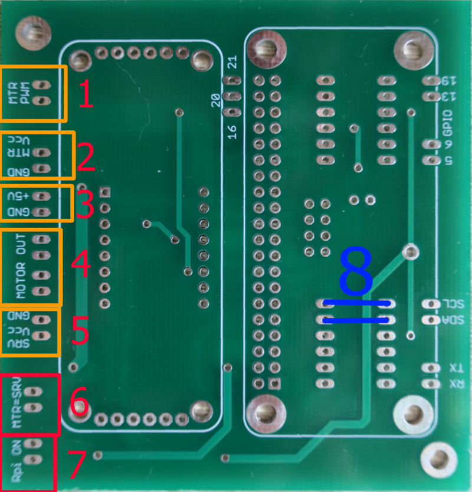

Schematic

downlaod Image in full size
PCB
You can also download files of PCB for cleaner connenctions

download PCB files
- PWM input for drive motors Should be connected to PWM module 15’th and 16th pins
- Power input for drive motors (check what maximum voltage your motors can work with)
- Power for RaspberryPi and PWM module – have to be exactly 5V
- Drive motor outputs (there are two outputs because we will pair drive motors )
- Servo Mechanisms power – also You have to check what voltage is good for them
- Jumper its present power from 5th input will power also drive motors so no need to connect anything to input 2
- Jumper if present RaspberryPi will be power from 3rd input – before put jumper here check if connections are OK – You don’t want to burn your RPi
- Lets solder here cables since we don’t need logic converters